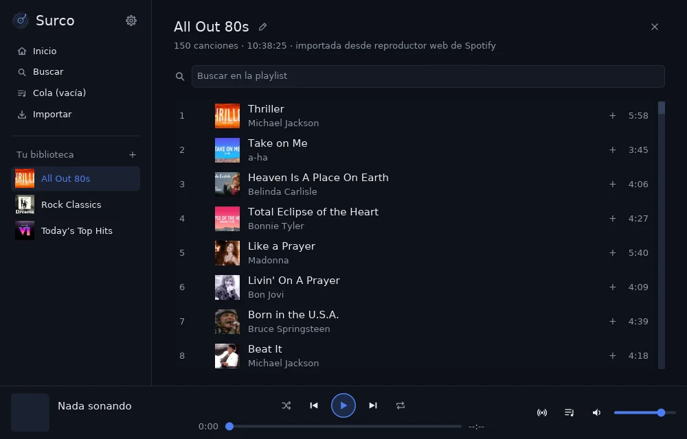
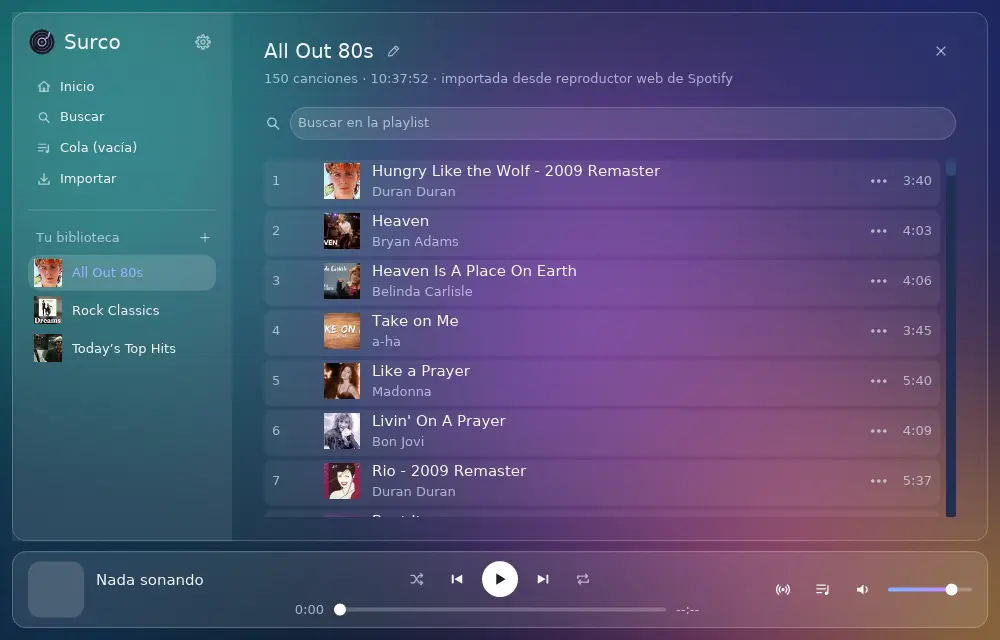
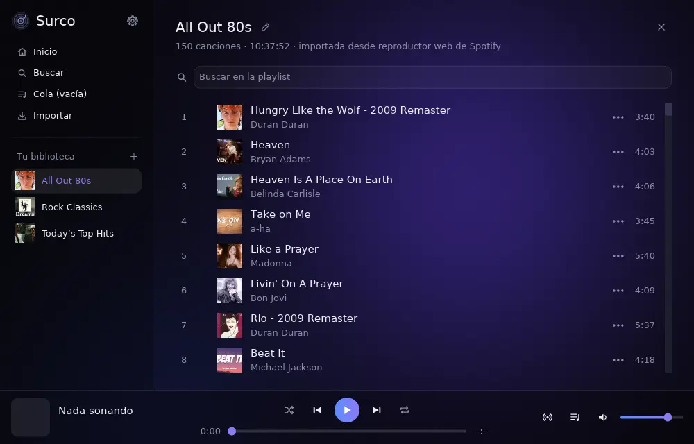
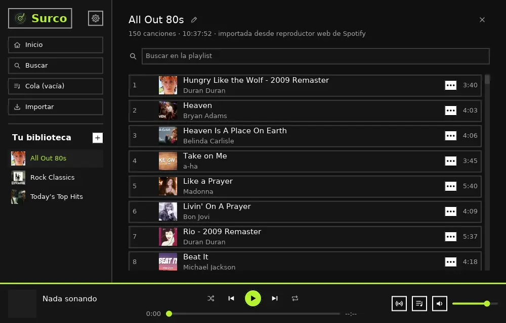
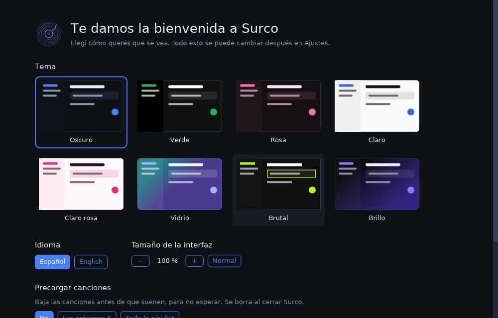
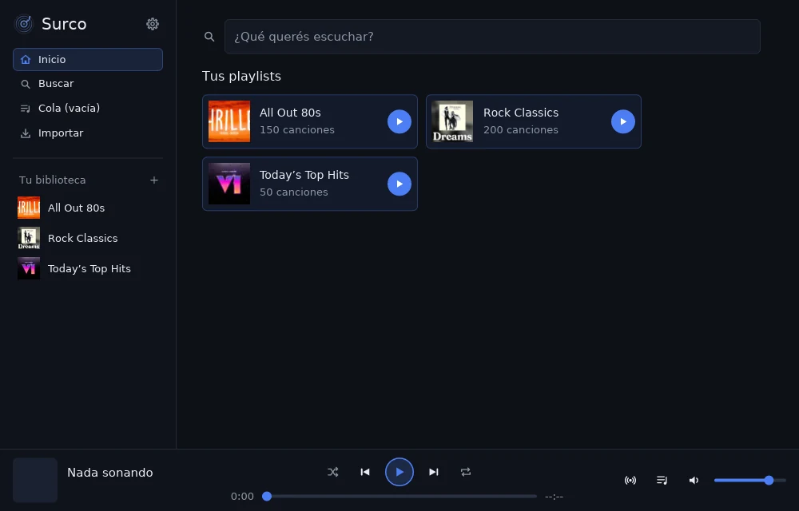
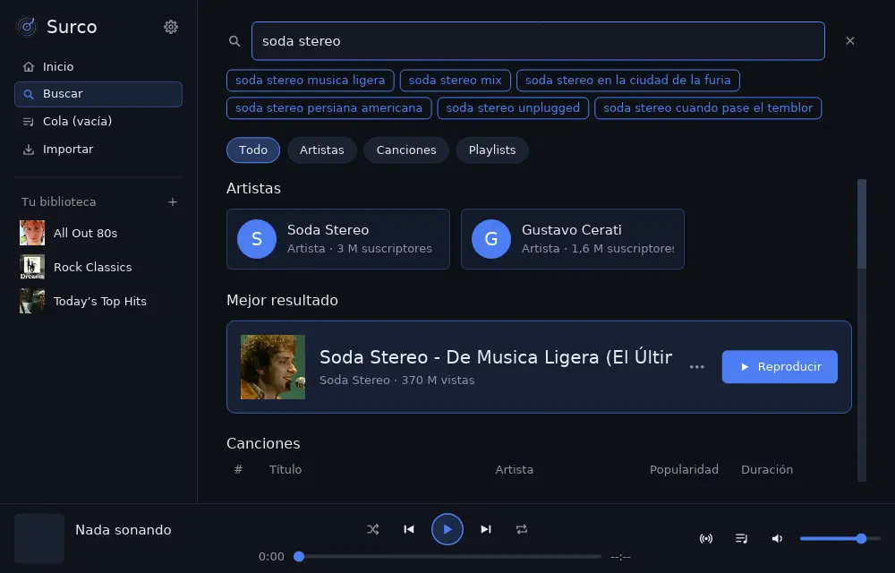
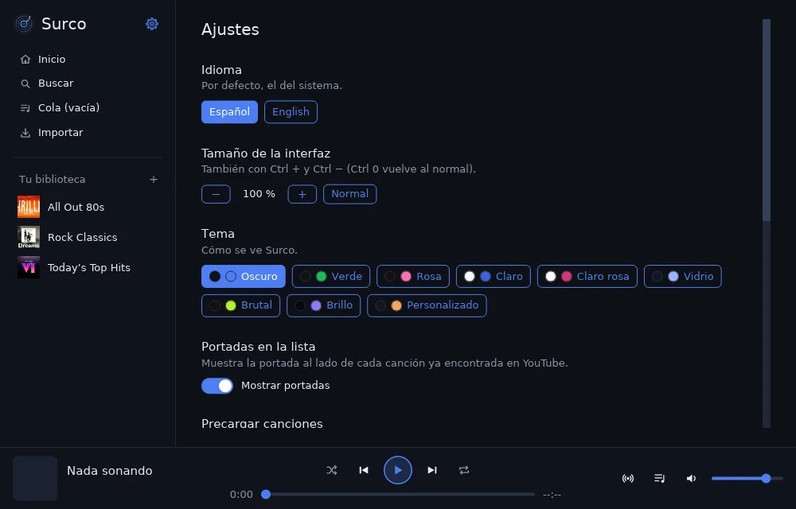

Tus playlists,
en tu compu.
Surco es un reproductor de música liviano y gratuito. Pegá el link de una playlist de Spotify o de YouTube y escuchala al toque, sin cuentas ni suscripciones.
Gratis y de código abierto (MIT). Sin publicidad.




Cómo funciona
De link a música en segundos
Sin crear cuentas, sin configurar nada. Abrís Surco y listo.
Pegá el link
Copiá el link de una playlist de Spotify, YouTube o YouTube Music y pegalo en Surco. También podés importar un CSV.
Surco la arma
Trae los nombres y las tapas, y busca cada canción en YouTube. Si encontró una versión equivocada, elegís otra con un clic.
Dale play
Escuchá sin cortes: la próxima canción se prepara mientras suena la actual. Tus playlists quedan guardadas en tu compu.
Funciones
Todo lo que esperás de un reproductor
Y nada de lo que sobra: sin publicidad, sin cuentas, sin rastreo.
Buscador al instante
Canciones, artistas y playlists de YouTube, con resultados mientras escribís.
Tus playlists
Creá las tuyas, sumá canciones desde cualquier lado y ordenalas arrastrando.
Radio y música sin fin
Armá una radio con canciones parecidas, o dejá que la cola se llene sola.
Recomendaciones
Al final de cada playlist, canciones parecidas para descubrir y sumar.
Cola editable
Agregá, quitá y reordená lo que viene, arrastrando.
Teclas multimedia
Funciona con las teclas del teclado y los controles de música del sistema.
Temas a tu gusto
Oscuro, claro, Vidrio, Brillo, Brutal o uno propio con tus dos colores.
Liviano de verdad
Hecho en Rust: abre rápido, pesa unos 15 MB y usa poca memoria.
Se actualiza solo
Te avisa cuando hay versión nueva y se instala con un clic.
Por dentro
Simple desde el primer minuto




Descargar
Bajá Surco gratis
Versión 1.0 · Elegí tu sistema. Ya marcamos el que estás usando.
Windows
Windows 10 u 11, 64 bits.
- Abrí el instalador. No pide permisos de administrador.
- Si aparece "Windows protegió su PC", tocá Más información y después Ejecutar de todas formas. Sale porque Surco no está firmado con un certificado pago.
- Seguí los pasos. Surco queda en el menú Inicio.
macOS
macOS 11 o más nuevo. Una sola descarga para Intel y Apple Silicon.
- Abrí el
.dmgy arrastrá Surco a Aplicaciones. - La primera vez, hacé clic derecho sobre Surco › Abrir y confirmá con Abrir. Desde la segunda vez abre normal.
- Si macOS dice que la app "está dañada", pegá esto en la Terminal y abrila de nuevo:
xattr -dr com.apple.quarantine /Applications/Surco.appLinux
64 bits (x86_64). Distros de 2022 o más nuevas, por ejemplo Ubuntu 22.04 o Debian 12.
Ubuntu, Debian, Mint, Pop!_OS: instalalo con una línea y se actualiza con el resto del sistema.
curl -fsSL https://devmathiux.github.io/Surco/install.sh | sudo shSe actualiza solo con sudo apt upgrade. Instalación manual del repositorio.
Primer arranque: Surco usa dos programas gratuitos, yt-dlp y deno. Si te faltan, la app te ofrece bajarlos de sus páginas oficiales con un botón y después los mantiene al día.
Preguntas
Lo que suelen preguntar
¿Necesito Spotify Premium o alguna cuenta?
No. Surco lee la lista de canciones de playlists públicas y busca cada una en YouTube. No hace falta iniciar sesión en ningún servicio.
¿Es gratis de verdad?
Sí. Es software libre bajo licencia MIT: sin publicidad, sin versión paga y con el código a la vista en GitHub.
¿Guarda la música en mi compu?
No. Surco reproduce en streaming. Precarga un poco de la próxima canción para que no haya cortes, y esa precarga se borra al cerrar la app. Lo que sí queda guardado son tus playlists, los videos que elegiste y tus ajustes.
Windows o macOS me dicen que la app no es segura. ¿Por qué?
Porque Surco no está firmado con un certificado pago de Microsoft o de Apple. Los pasos de la sección Descargar explican cómo abrirlo igual. El código está publicado y cada versión se compila en GitHub Actions.
¿Cómo lo actualizo?
Surco te avisa cuando sale una versión nueva y la instala con un clic. Si lo instalaste con apt, se actualiza junto con el resto del sistema.